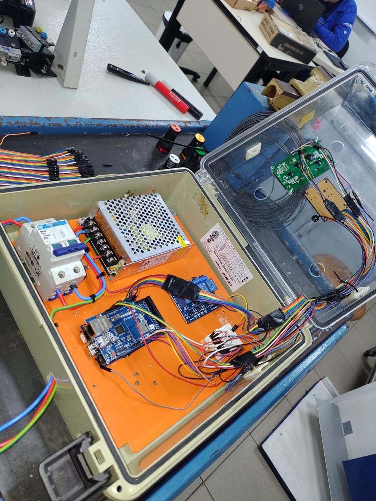
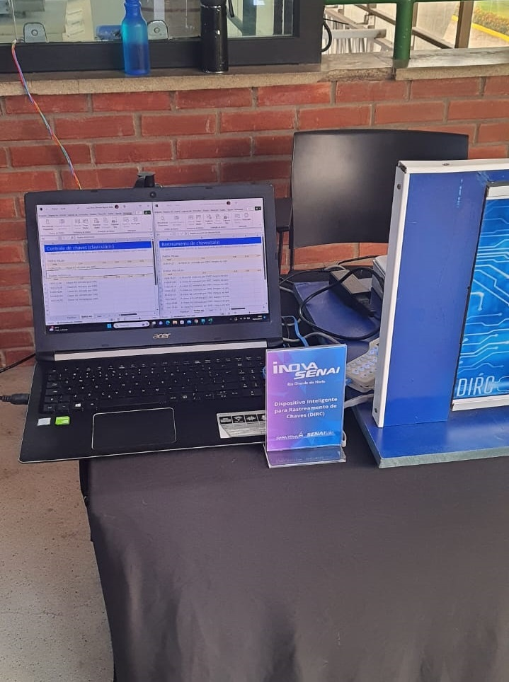

NOSSO TIME
JEANE KELLY
Professora orientadora
Formada em eletrotécnica, tem a função de CEO no projeto.
LUIZ ARILO
Professor co-orientador
Com atuação na área de automação, tem a função de COO.
RAFAEL ANTONIO
Aluno
Cursando eletrotécnica, é o responsável por todo o sistema elétrico do projeto.
ERALDO SILVA
Aluno
Formado em mecânica, é o responsável pela parte estrutural.
KELLY DANTAS
Aluna
Cursando eletrotécnica, é a aluna responsável pela programação do sistema.
SOBRE O PROJETO
O Dispositivo Inteligente Rastreador de Chaves (DIRC) é uma solução inovadora desenvolvida para ambientes com alto fluxo de movimentação de chaves, como escolas, empresas e instituições. Este projeto visa resolver problemas frequentes de perda e extravio de chaves, proporcionando um sistema eficiente e seguro para o rastreamento e controle de chaves. Utilizando tecnologias avançadas como RFID (Identificação por Radiofrequência), Arduino e shield Wi-Fi, o DIRC monitora e gerencia a movimentação de chaves. Cada chave é equipada com uma tag RFID, que permite sua identificação única.
Quando uma chave é retirada do claviculário, o sistema registra o responsável por essa ação. Caso a chave não seja devolvida corretamente, o dispositivo emite alertas sonoros ou visuais, notificando o usuário sobre o esquecimento. O Arduino atua como o controlador central, processando os dados recebidos das tags RFID e comunicando-se com um sistema central através do shield Wi-Fi. Esse sistema central pode ser acessado remotamente, permitindo o monitoramento em tempo real das atividades de retirada e devolução de chaves.

